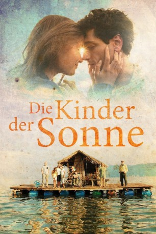

#3558 Die Kinder der Sonne
Alternativ: Children of the Sun (Englischer Titel)
 
 IMDB-Wertung: 6.6 / 10
IMDB-Wertung: 6.6 / 10  Metascore: 0
Metascore: 0 
Kale muss mit seiner Familie sein Zuhause verlassen, weil seine Taverne den Plänen der örtlichen Mafia im Wege steht. Die ganze Hoffnung der Familie liegt auf der hübschen Tochter Angela, die mit einem reichen Deutschen verkuppelt werden soll. Doch Mutter Miras Auserkorener entpuppt sich als Betrüger und Angela trifft sich weiterhin heimlich mit ihrem Liebhaber Marco. Als Kale beim Tauchen eine goldene Figur findet, schöpft die schräge Familie wieder Hoffnung. Aber alles kommt ganz anders…
Jahr: 2014
Dauer: 89 Minuten
FSK: 12
Land: Mazedonien Studio: Lighthouse Home EntertainmentTonspuren:
Untertitel: Englisch,
Auflösung: 1080p (1920x1080) Größe: 7229 MB
Genre: Thriller, Drama, Komödie, Familie, Liebe
Regisseur: Antonio Mitriceski
Drehbuch: James Kevin McGuinness
Soundtrack:
Darsteller:
- Emir Hadzihafizbegovic als Furda
- Ivana Pavlakovic als Angela
- Vlado Jovanovski als Kale
- Meto Jovanovski als Kral
- Biljana Tanevska als Mira
- Milica Stojanova als Lena
- Kire Gorevski als Marko
- Jordanco Cevrevski als Soni
- Martin Mircevski als Dupli
- Aleksandar Mikic als Cucla
- Kamka Tocinovski als Zhirafa
- Vlatko Stefanovski als Adamo
- Aco Dukovski als Chuvarot
Datei: X:\2014(G-M)\Kinder der Sonne, Die (2014, FSK12, 1920x1080).mkv seit 29.04.2016
Festplatte: HD 2013(I-Z)-2014(A-Z)
 Es gibt insgesamt 136 Filme in der Gruppe '2014(G-M)'
Es gibt insgesamt 136 Filme in der Gruppe '2014(G-M)'